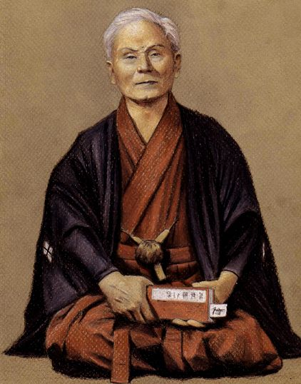

Historia do karate shotokan
O karatê é uma arte marcial japonesa que surgiu na ilha Okinawa. A história do karatê começa quando o monge indiano Bodhidarma caminha da Índia para China querendo fundar um mosteiro budista. Além dos conceitos de contemplação do budismo, Bodhidarma levou uma técnica de luta sem armas, com objetivo de manutenção da saúde e autodefesa, dando início as artes marciais.
Okinawa pertencia a China durante a dinastia Ming e o intercâmbio cultural foi inevitável. Após o final da dinastia Ming, Okinawa passa a ser dominada pelo Japão. Querendo evitar uma rebelião, os japoneses proíbem o uso de armas de fogo em Okinawa. A população começou a utilizar pés e mãos como forma de defesa, os mestres selecionavam os alunos e seus treinos eram secretos. A repressão da elite japonesa era tão grande que foi comparada com a perseguição a capoeira no Brasil Imperial.
No séc. XIX com a liberação do uso de armas de fogo, a história do karatê muda, a partir daí, o karatê começa a ser praticado com enfoque em educação física e fundamentação espiritual, sendo introduzido como educação física em 1905.
O principal responsável por popularizar o karatê fora de Okinawa foi o mestre Gichin Funakoshi. Em 1916 fez a primeira demonstração pública, na cidade de Kyoto, em 1921 faz uma apresentação para Hiroshita, o futuro imperador do Japão. Em 1923, o mestre Funakoshi se muda para Tóquio com intuito de propagar o karatê no Japão, sempre buscando formar homens como cidadãos úteis a sociedade.
Após a derrota japonesa na 2ª Guerra Mundial, as forças Norte Americanas dominaram o Japão e proibiram a prática do karatê. Porém, alguns alunos de Funakoshi convenceram que o karatê era um esporte inofensivo, além disso, alguns soldados americanos estavam interessados em aprender aquela nova arte marcial. Assim com a imigração japonesa, o karatê se propagou pelo mundo ganhando adeptos de várias nações do mundo.
Serei sua mestre
Trajetoria infinita, essa é a definição que eu tenho quando me refiro ao karatê - do. No início era p ser somente uma atividade ocupacional, mas os treinos, as idas ao dojo, as dores, a vontade de persistir eram maiores, e fui criando uma pessoa diferente e com mais determinação dentro de mim. por isso hoje tenho uma definiçao bem clara de que realmente o karatê é: Karatê é uma persistência contante, diária e incansável do seu corpo e da sua mente, você precisa fazer parte do karatê e deixar o karate fazer parte de você. Tem que existir o comprometimento com o aprender e o praticar. Precisa conhecer ponto a ponto e saiba que por mais que estude, sempre Vai precisar estudar mais.
Vivo o karatê diariamente não só dentro do dojo, mas em minha vida diária e é dessa forma, que trago a arte aos meus alunos, fazendo com que eles entendam que karatê não é somente dentro do dojo e sim, do lado de fora também.
Não quero passar aqui uma imagem de perfeição de movimentos corretos, por que isso não é real, o meu objetivo e mostrar junto com meus alunos. a evolução diaria e os resultados finais de cada dia de treino, o outro dia, sempre vai ser mas um dia de aprendizado. Oss
Dias dos treinos
Por conta da pandemia estarei agendando o melhor horario pra você!
Localização do dojo
R. Caribe, 11 - Caonze, Nova Iguaçu - RJ, 26255-145
Aberto de 8hr até 22hr